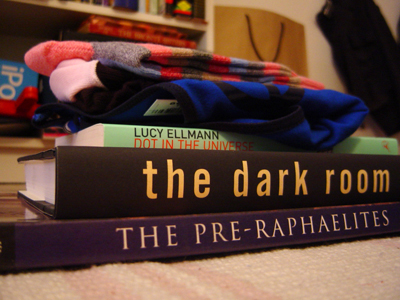
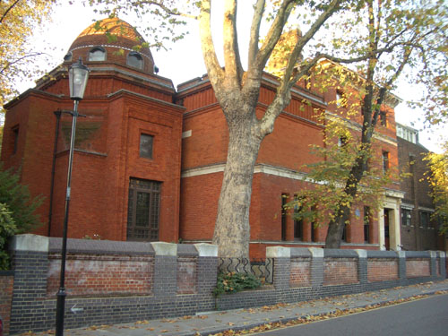
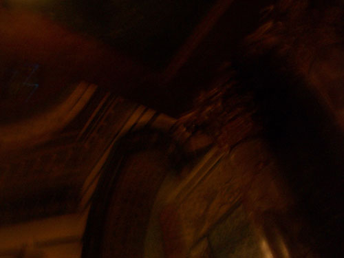
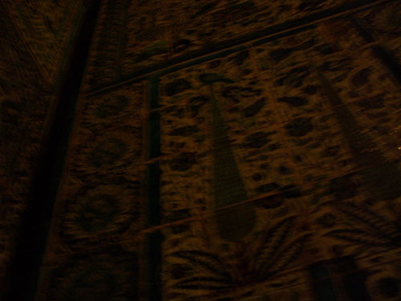
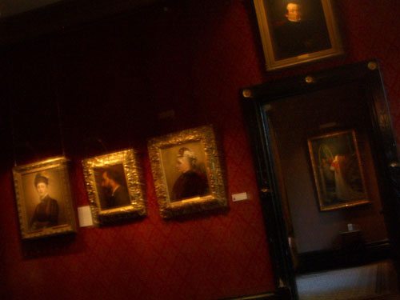
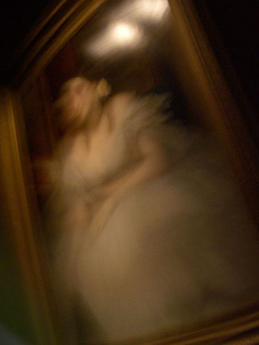
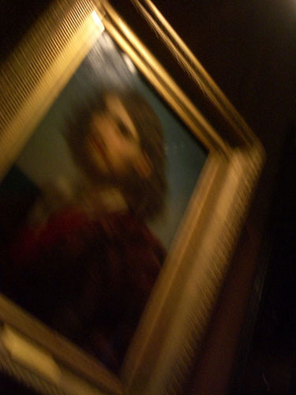
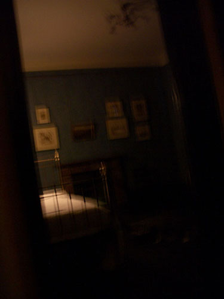

That image by Miss Milkgrass had a mysterious effect on me... Those Pre-Raphaelites never much impressed my eye, still less my mind, so it was slightly odd how old memories of Leighton House called to me as I glanced on the young lady's pile of books. All those sultry heads she had been drawing recently, now made deeper sense. Seeping from that same dark vein of the imagination the mothballed Victorians had mined. Guided by an impulse that simultaneously makes manifest, and distances, something that might just, perhaps, be called desire. Imagine a sketch of a smoldering firework. Fizzling. Never to explode. |  | Throughout the Eighties we lived in Kensington. We had two routes. One, up through Holland Park to the buzz of Notting Hill Gate. The other, past wealthy houses to the shops along Kensington High Street. Over time, we transferred our allegiance to Mable Arch, rarely going to Kensington any more. What for? Recently I've been trying to track down some thick, brushed cotton, winter shirts. A dying species. Maybe in those outdoor leisure shops on Kensington High Street. I'll go check them out, then visit Leighton House... Of course when I got there it suddenly seemed so obvious that photography would be prohibitted. "Sorry, sir. Because of security, you see. A requirement of our insurance." |  | It's always strange to visit someone's house after it has become a public place. You look at a window seat with a rope across it and picture someone idling there, trying to decide whether to go out or not. And then there are the spaces that must always have been semi-public, the reception rooms, or this Moorish vault that probably never saw the wild days its exoticism imagined. Mostly empty, echoing occasionally to crisp, brittle tones of English enthusiam. "Oh! Isn't it quite, quite, wonderful." Somber souls prowl round petticoated effusions and scowl, dwelling bitterly on how deep they are in debt. Stiff shirt, stiff back, creak of boot leather. No amount of ornament can change the mind. And tiles are cold. |  | No, I take that back. It is wintery England that is cold. Tiles are beautiful even here, in the old, dead Lord's former home. I'm sure the first time the workmen unpacked them from the straw-filled crates, he caressed them slowly, lost in thought. No one noticed. A feather duster twitched along the bannistairs. "So much dust!" Who this "Lord Leighton" was really, I cannot claim to know. A noble man behind a beard. A country house behind a hedge. I imagine he must have been almost always busy, and not infrequently a little lonely, in his perfect home. Sometimes he would look out at a passing carriage, or tradesman, in the street, secure behind his clear, best quality glass, and wonder why the world was a rabid pile of ants. Better return to his inner world, the studio upstairs. An endlessly simmering, muted desire for warmth, splendour, flesh. Yes, naked flesh. Not just the model nude. And true glory, not just props. |  | Ornament may not change a mind, but it certainly can cosset it. Warm, deep crimson on every side. Soft, warm and deep. The Victorian livingwomb. And on the walls the images of those whom one should become. Posed, sedate, respected members of orthodox Eternity. The gilded grave. "Doesn't one sometimes wish that one could fly? Oh, dear me, whatever made me think to ask you that?" There are two kinds of pictures here. Portraits of "Someone Else" – self-portraits included – and "Oil Painting Land", well-groomed windows unto, now all too revealing, views of History. Romans, Egyptians, Greeks. Slave market in Mesapotamia. An obsession with the sandalled foot. "Another cup of tea?" |  | There is a short story by Henry James called The Private Life which I remember reading some years ago in a collection called The Figure in the Carpet and other stories. The thing that makes it relevant here is that one of the characters, Lord Melifont, is based on Lord Leighton, whom James knew. It's a rather silly story, a bit fantastical, describing the differing (yet similar) private lives of two great men, an author and a painter. The author is, literally, two people. A bland, trivial, public man who gossips, and a profound double who sits in the dark, alone, and writes. The painter, Lord Melifont, only exists when someone expects him to be there. Without an audience he vanishes. I remember a note in the introduction mentioning that James had based the story on a remark of Lady Leighton's to the effect she was always a little afraid that her husband would disappear when he was wholly by himself. It's spooky, this former home of the public man. There's not much really here. A few stodgy, old paintings. A studio that functions as a recital room, a platform with a little black piano at one end. I prowl about, peer out of windows. The garden is deserted. Time to go. |  | After I left, I went up to Notting Hill Gate, past my old haunts in Holland Park. I now know the feelings of a ghost. As I waited in the queue of the refurbished cafe, I thought about how much had changed. This discord, compounded with the distinct feeling that no one noticed me, made me feel I was indeed a ghost. I half expected someone to walk straight through me. Occasionally a few other half-ghosts would focus their eyes, and peer at me with some kind of recognition. Dusk descended. At least I knew my way back to the tangible world of my front door key. The whole afternoon had been an excercise in willful nostalgia, garnished with a taste for insubstantiality. I was rather disappointed with the pictures at first. I had had no chance to do anything other than point my camera secretly and click. Half-expecting at any moment the man from the entrance to come clicking his heels across the parquet and embarass me. I scanned for security cameras, and fumbled with my little Optio nestled in my scarf. Standing serious faced while behind my back my hands were busy. |  | This I assume was the great man's bedroom. I'm hiding behind the door frame to avoid an all seeing eye wired up in the corner. When we were in Sils Maria a few years ago, we visited the "Nietzsche house". Another inside/outside, visible/invisible soul. When he had spent his summers there it had been a shop and he had rented a room upstairs. The same "just as he left it" effect. I've been thinking all week, as I pieced this little text together, about desire, and what it means to have it. João went off for ten days on Thursday, leaving me on my own. Last night I got what I desired and saw, all too clearly, that it was not what I wanted after all. The firework was a dud. Today, I'm sore, and cold. This flat is not the perfect home. And I wonder why the world is just a rabid pile of ants. And... should I go out, or not? In memoriam, summer days. |